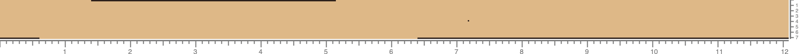

FAS grading in the 1998 Red Oak dataset
This page presents schematic illustrations of boards with corresponding defects from the 1998 data bank for kiln-dried red oak lumber.
My goal is to understand why these samples were graded FAS.
For further details on the dataset please refer to the corresponding paper.
Some information on the data:
- The wood is kiln dried, which allows for 1/4-inch narrower widths (for FAS this means we are allowed a minimum width of 5.75 inch instead of 6 inch).
- The grading follows the 1998 NHLA rule book. Q Were significant changes made to grading rules since 1998?
- In the samples below I'm showing a single side for each board. As far as I understand, a FAS grade implies that both sides are FAS.
- Light brown denotes clear wood,
while dark brown denotes defective regions.
- I'm not differentiating between the types of defects (that is, I'm showing all defects with a single color).
The types of defects are stain, checks, sound knot, unsound knot, wane, split or shake, pith, hole, decay, bark pocket, void.
Q Should I explicitly indicate the type of defect?
- The horizontal ruler shows feet, while the vertical shows inches.
Selected samples
Board no.: 437
Board size: 9.00 in × 8.04 ft (96.50 in)
Surface measure: 6 ft
Board no.: 279
Board size: 7.25 in × 12.08 ft (145.00 in)
Surface measure: 7 ft

Board no.: 468
Board size: 9.25 in × 8.04 ft (96.50 in)
Surface measure: 6 ft
Board no.: 591
Board size: 11.25 in × 11.90 ft (142.75 in)
Surface measure: 11 ft
Board no.: 261
Board size: 7.00 in × 14.04 ft (168.50 in)
Surface measure: 8 ft
Board no.: 636
Board size: 13.00 in × 12.06 ft (144.75 in)
Surface measure: 13 ft